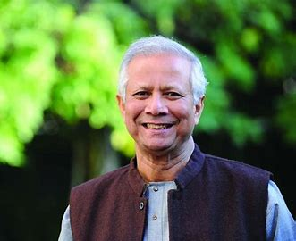

Dr.Muhammad Yunus
1940-2024
The Nobel man of Bangladesh
Banker to the Poor.Professor Muhammad Yunus established the Grameen Bank in Bangladesh in 1983, fueled by the belief that credit is a fundamental human right. His objective was to help poor people escape from poverty by providing loans on terms suitable to them and by teaching them a few sound financial principles so they could help themselves.
From Dr. Yunus’ personal loan of small amounts of money to destitute basketweavers in Bangladesh in the mid-70s, the Grameen Bank has advanced to the forefront of a burgeoning world movement toward eradicating poverty through microlending. Replicas of the Grameen Bank model operate in more than 100 countries worldwide.
Biographies
-
Yunus was born on 28 June 1940 to a Muslim family in Hathazarai, Chittagong. In 1940, that was part of British-controlled India. But, after independence in 1947, became East Pakistan. (and later Bangladesh)
-
Yunus was an excellent student, becoming one of the best students in the year at Chittagong Collegiate School, and later Chittagong College. He completed a BA degree in economics at Dhaka University in 1960, and his MA in 1961.
-
After graduation, he taught economics at Chittagong College, and served as a research assistant under Nurul Islam. In 1965 he gained a Fulbright scholarship to study in the UN. Later in 1971, he gained a PhD in economics from the Vanderbilt University Graduate program in Economic development. He also worked as an assistant professor of economics at Middle Tennessee State University.
-
In 1970, he met Vera Forostenko a Russian immigrant to the US. They had one child, Monica Yunus, but Vera did not want to live in Bangladesh and the couple split. Yunus later married Afrozi Yunus, and they had one daughter Deena Afroz Yunus.